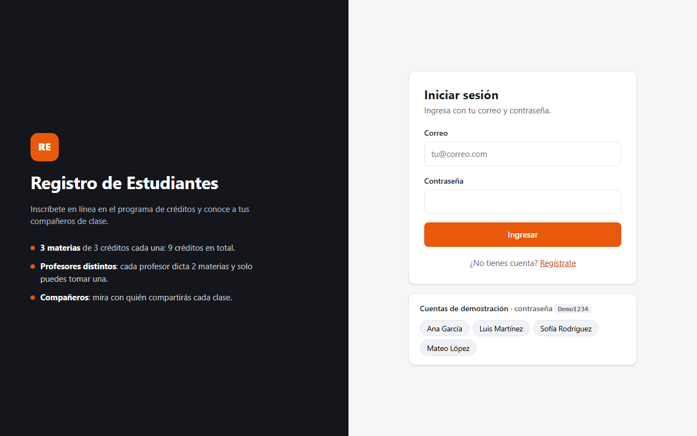
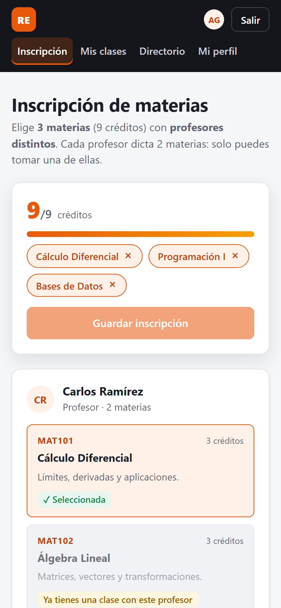
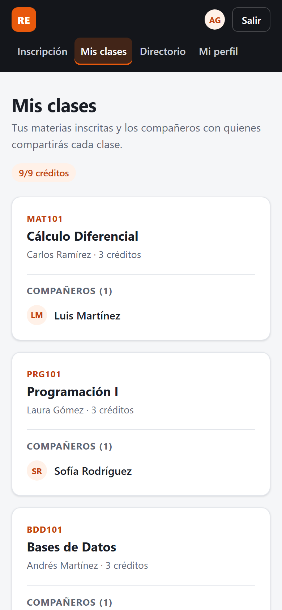

Prueba técnica: Registro de Estudiantes
Aplicación web para el registro en línea de estudiantes en un programa de créditos.
1.Introducción
En este documento explico cómo resolví la prueba: qué construí, cómo interpreté los puntos del enunciado que podían leerse de varias formas, las decisiones técnicas que tomé y cómo lo probé.
La solución tiene tres partes:
- Un frontend en Angular 20 donde el estudiante se registra, inscribe sus materias, ve sus clases y compañeros, y consulta el listado de estudiantes.
- Una API en .NET 8 organizada por capas (Domain, Application, Infrastructure y Api), con autenticación JWT.
- Una base de datos SQL Server creada con scripts, que también hace cumplir las reglas principales.
La idea que guió el diseño fue validar las reglas en varias capas: la interfaz evita que el usuario se equivoque, la API responde con mensajes claros y la base de datos asegura que los datos queden bien, incluso si llegan dos peticiones al mismo tiempo.
2.Cómo ejecutarlo
Requisitos: .NET SDK 8, Node.js 20.19 o superior (o 22 LTS), SQL Server (Express, Developer o LocalDB) y sqlcmd.
git clone https://github.com/mchl27/RegistroEstudiantes.git cd RegistroEstudiantes .\setup.cmd
El script revisa los requisitos, busca la instancia de SQL Server, crea la base de datos, compila, corre las pruebas y abre la aplicación. Si la instancia no se detecta sola, se puede indicar con .\setup.cmd -SqlServer "MI_SERVIDOR". El README tiene también los pasos para hacerlo manualmente.
- Aplicación:
http://localhost:4200 - API (Swagger):
http://localhost:5080/swagger - Usuarios de prueba:
ana.garcia@registro.test,luis.martinez@registro.test,sofia.rodriguez@registro.testymateo.lopez@registro.test, todos con la contraseñaDemo1234.
3.Cómo interpreté el enunciado
Algunos puntos se podían entender de más de una manera. Estas fueron mis decisiones:
| Punto | Decisión |
|---|---|
| "Sólo podrá seleccionar 3 materias" | Lo tomé como exactamente 3 para poder guardar, porque así se completan los 9 créditos del programa. |
| Reglas 8 y 9 | Para la regla 8 hice un listado con el nombre, las materias y los créditos de cada estudiante. Para la regla 9, en cada una de mis clases solo aparece el nombre de los compañeros. En ninguna parte se muestra el correo ni el documento de otra persona. |
| Regla 7 | Como cada profesor dicta 2 materias, la regla equivale a no poder tomar las dos materias del mismo profesor. |
| Materias y profesores | Los cargué como datos fijos con un script. No hice un módulo para administrarlos. |
| Eliminar un estudiante | Usé borrado lógico: el registro se marca como eliminado, se liberan sus materias y el correo queda disponible para registrarse de nuevo. |
| "Ver en línea" | El listado de estudiantes se actualiza solo cada 15 segundos. |
4.Cómo se cumple cada regla
| # | Regla | En la aplicación | En la base de datos |
|---|---|---|---|
| 1 | Registro en línea (CRUD) | Registro, edición del perfil y eliminación de la cuenta | Correo y documento únicos entre estudiantes activos |
| 2 | Programa de créditos | El estudiante queda en el programa al registrarse | Relación Student → CreditProgram |
| 3 | 10 materias | Se muestran agrupadas por profesor | Se cargan en 02_seed.sql |
| 4 | 3 créditos por materia | Contador de créditos al inscribir | CHECK (Credits = 3) |
| 5 | Solo 3 materias | Al elegir 3, las demás se desactivan; la API también lo valida | Columna Slot de 1 a 3 con UNIQUE (StudentId, Slot) |
| 6 | 5 profesores, 2 materias cada uno | Una tarjeta por profesor | UNIQUE (ProfessorId, ProfessorSlot) |
| 7 | No repetir profesor | Al elegir una materia se desactiva la otra del mismo profesor; la API también lo valida | UNIQUE (StudentId, ProfessorId) |
| 8 | Ver registros de otros | Pantalla Directorio, con búsqueda | — |
| 9 | Ver solo el nombre de los compañeros | Pantalla Mis clases | — |
5.Arquitectura
Las flechas indican qué capa depende de cuál. El dominio no depende de ninguna otra; Infrastructure implementa las interfaces que define Application.
- Domain: las entidades. La regla de inscripción está en
Student.Enroll. Las propiedades no se pueden modificar desde fuera; los cambios pasan por métodos que validan. - Application: los casos de uso (registro, inscripción, perfil), los DTOs y las validaciones de formato con FluentValidation.
- Infrastructure: el acceso a datos con EF Core, las transacciones y el hash de contraseñas.
- Api: los controladores, la autenticación JWT y un manejador central de errores.
En Angular organicé el código por funcionalidad (una carpeta por pantalla), usé signals para el estado, un interceptor para agregar el token y guards para proteger las rutas.
6.Base de datos
Hay cuatro detalles del modelo que vale la pena explicar:
- Máximo 3 materias. Cada inscripción ocupa un "slot" del 1 al 3, y la combinación estudiante-slot es única. Así no puede existir una cuarta materia. Preferí esto a un trigger que cuente las inscripciones, porque con dos peticiones al mismo tiempo el conteo podría fallar; el UNIQUE lo resuelve SQL Server.
- No repetir profesor. Guardo también el profesor en la inscripción para poder poner
UNIQUE (StudentId, ProfessorId). Para que ese dato no quede distinto al de la materia, la llave foránea es compuesta: la pareja materia-profesor tiene que existir en Subject. - 2 materias por profesor. Con la misma idea de los slots:
ProfessorSlot1 o 2 y único por profesor. - Correo único. Los índices de correo y documento son filtrados (
WHERE IsDeleted = 0), para que un estudiante eliminado no bloquee su correo.
Scripts: 01_schema.sql crea las tablas, 02_seed.sql carga el programa, los profesores y las materias (se puede ejecutar varias veces), y 03_verify_rules.sql intenta romper cada regla dentro de una transacción que al final se deshace, así que no deja datos.
7.API
| Método | Ruta | Auth | Uso |
|---|---|---|---|
| POST | /api/auth/register | No | Registro |
| POST | /api/auth/login | No | Inicio de sesión |
| GET | /api/subjects | No | Materias con su profesor |
| GET, PUT, DELETE | /api/students/me | Sí | Ver, editar o eliminar mi registro |
| GET | /api/students | Sí | Listado de estudiantes |
| GET | /api/enrollments/me | Sí | Mis clases y compañeros |
| PUT | /api/enrollments/me | Sí | Inscribir las 3 materias |
Los errores se devuelven en formato ProblemDetails con un campo code. Uso 400 para datos con formato inválido, 401 para credenciales o token inválidos, 404 cuando algo no existe, 409 cuando choca con datos existentes (por ejemplo, un correo ya registrado) y 422 cuando los datos están bien pero incumplen una regla. Ejemplo:
PUT /api/enrollments/me { "subjectIds": [1, 2, 7] }
422 { "title": "Regla de negocio incumplida",
"detail": "No puedes tomar dos materias con el mismo profesor (Carlos Ramírez).",
"code": "enrollment.same_professor" }
8.Seguridad
- Las contraseñas se guardan con hash (PBKDF2, el de ASP.NET Core Identity).
- El token JWT se valida en cada petición. Las rutas
/metoman el id del estudiante del token, así que nadie puede modificar a otro. - Si el login falla, el mensaje es el mismo cuando el correo no existe y cuando la contraseña está mal.
- El listado y la vista de compañeros usan DTOs que no incluyen correo ni documento.
- La clave del JWT no va en el repositorio para producción; se configura con una variable de entorno.
9.Pruebas
- 11 pruebas unitarias (xUnit) sobre la regla de inscripción: caso válido, cantidad incorrecta, profesor repetido, materia repetida, reinscripción y borrado.
- 11 pruebas en SQL (
03_verify_rules.sql) que confirman que la base de datos rechaza cada caso inválido y acepta los válidos. - Pruebas manuales del flujo completo en el navegador: registro, inscripción, mis clases, listado, edición del perfil, eliminación de la cuenta e intento de ingresar con la cuenta eliminada. También revisé la aplicación en distintos tamaños de pantalla, incluido el celular.
Problemas que encontré al probar
- En Swagger, un error de regla de negocio respondía con estado 422 pero con un cuerpo de error 500. La causa era que Swagger pedía
text/plainy el manejador de errores solo escribía JSON. Lo corregí para que siempre responda el error real en JSON. - En el formulario de registro, el campo Apellido se salía de la tarjeta en pantallas medianas. Era un tema del grid de CSS con el ancho mínimo de los inputs.
- En el celular, el último enlace del menú quedaba cortado. Ajusté los tamaños.
- El script de instalación se saltaba la compilación cuando había otra API ejecutándose. Lo encontré al probarlo sobre una copia limpia del repositorio.
10.Pantallas







11.Decisiones y pendientes
Algunas decisiones que tomé y por qué:
- Usé scripts SQL en lugar de migraciones de EF Core, porque el enunciado pide los scripts y así las restricciones quedan claras para cualquiera que revise la base de datos.
- Mantuve una arquitectura por capas sencilla, sin MediatR ni CQRS, porque para el tamaño del problema me pareció suficiente.
- La inscripción se guarda completa en una sola operación (las 3 materias juntas), dentro de una transacción, para no dejar estados a medias.
- Para "ver en línea" usé una consulta cada 15 segundos en lugar de WebSockets, que para este caso me pareció suficiente.
Lo que haría con más tiempo:
- Pruebas de integración de la API contra una base de datos real (Testcontainers).
- Cupos por materia y un rol de administrador para gestionar materias y profesores.
- Notificaciones en tiempo real con SignalR.
- Docker y un pipeline de integración continua.
- Refresh tokens y guardar la sesión en una cookie httpOnly en lugar de localStorage.